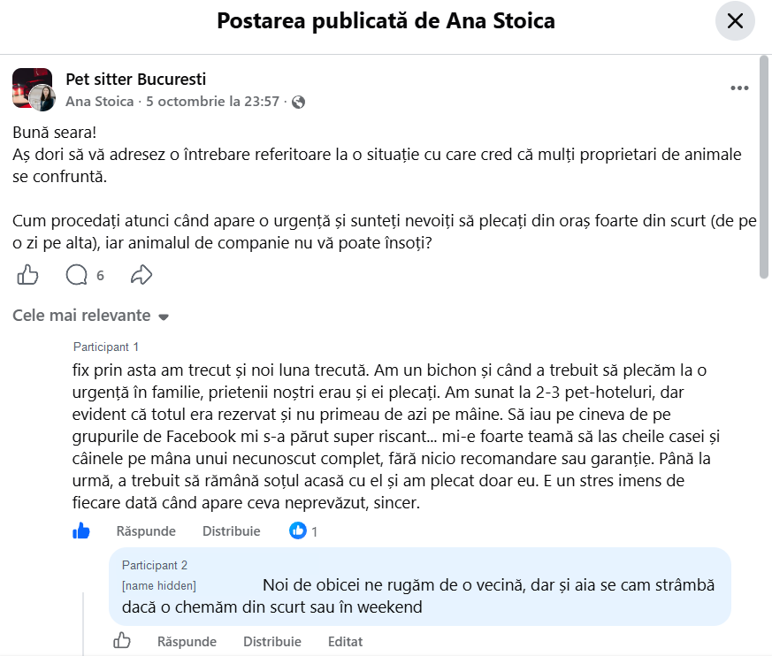
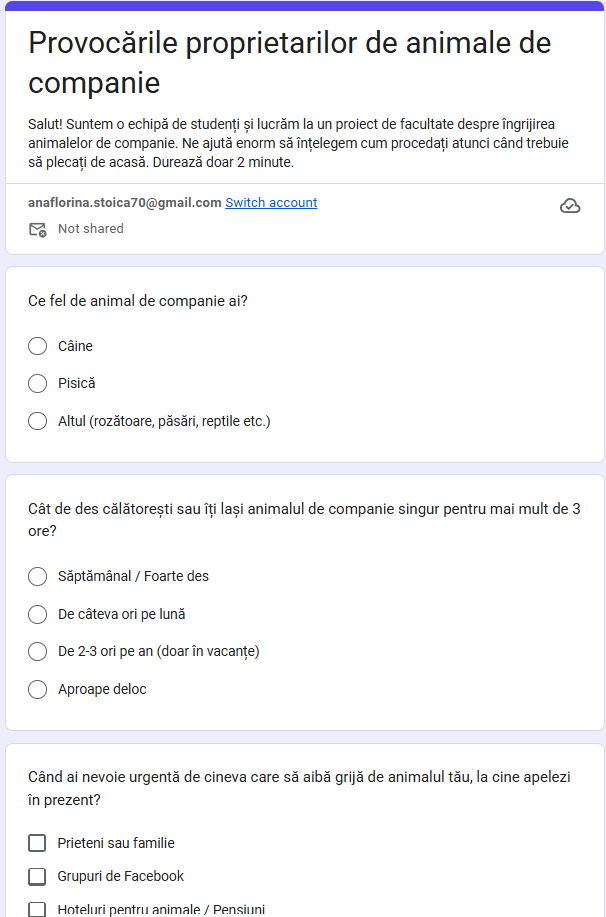
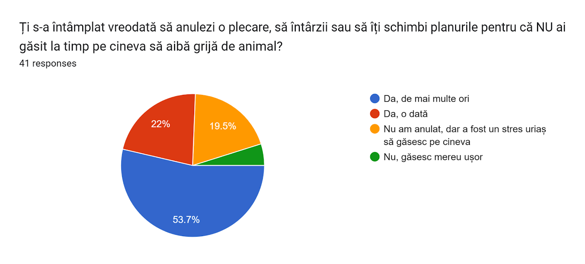
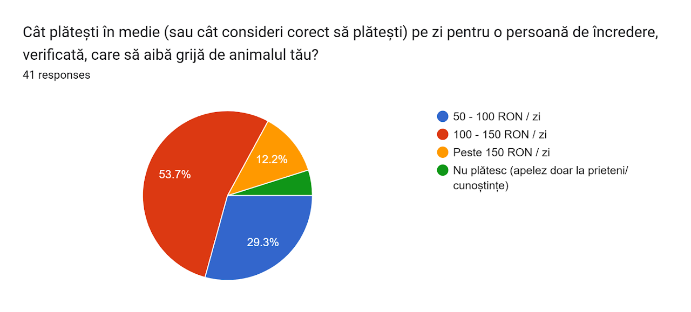
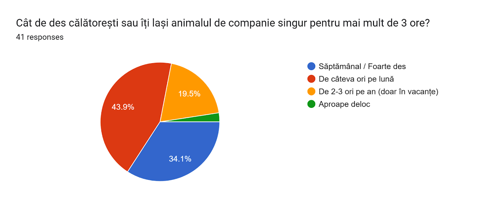

Product & Backend
Stoica Ana-Florina
Product definition and backend development.
anaflorina.stoica70@gmail.com
IAS / 2026
A local pet-care marketplace.
A mobile app concept connecting pet owners with verified local sitters. This Fiki documents the project's development, customer research, and milestone deliverables.
About this page. All milestone documentation is kept on this Fiki. The customer-facing landing page is a separate M3 deliverable.
Project progress
Team, problem definition, proposed solution, and business model.
Research methods, survey findings, evidence, and product decisions.
Application structure, user flows, and the customer-facing page.
Three face-to-face interviews with potential users and evidence-based product insights.
M1 / Fiki & project description
Team
Product definition and backend development.
anaflorina.stoica70@gmail.comPet owners who travel, work long hours, or face an emergency struggle to find someone reliable to look after their animal.
Friends, Facebook groups, and word of mouth can mean a slow, unstructured search: no verified reviews, no clear prices, and no dependable way to find help at short notice.
PetSitter is a mobile app concept connecting pet owners with local pet sitters in minutes.
Our value proposition combines local availability, trustworthy profiles, transparent prices, and protected payments.
These are planned product capabilities, not live services on this Fiki.
Product scope
Dog walking, home care, temporary boarding, feeding, and check-in visits.
Clear prices, availability, and real reviews on each pet sitter's profile.
Search by location and availability, including urgent, short-notice requests.
Direct chat and calls with sitters, plus notifications about your booking.
Secure in-app payments, with funds released after the care service.
Pet profiles with meal schedules, allergies, and special needs, shared with the sitter.
Customer segments
Urban owners of dogs, cats, and small pets who travel, work long hours, or need urgent help.
Students, animal lovers, and freelancers looking for flexible extra income through caring for animals.
Competition
| Alternative | The gap we identified | Our proposed advantage |
|---|---|---|
| Friends, family & Facebook groups | Uncertain availability, no consistent review system, and no payment protection. | Verified profiles, reviews, and secure payments. |
| Pet hotels | Potentially expensive, stressful for the animal, and limited by available spaces. | Care at home and flexible pricing. |
| Global platforms, such as Rover & Wag! | Our initial assumption: limited local coverage in Romania and a gap in urgent matching. | A local focus, fast matching, and Romanian-language support. |
Measurement
Business model
Business model
Business model hypotheses; pricing and paid demand still need validation.
M2 / Validation 1: the idea
Before building the solution, we needed to understand the problem. Our customer discovery explored how people find pet care, where that process breaks down, and what would make them trust someone new.
Research team: Stoica Ana-Florina & Anca Radu.
Last summer, Ana had to attend an event in another city and could not find anyone to look after her dog, Hector. Friends and family were busy. Facebook brought messages from unverified strangers, which felt unsafe.
In her experience, the pet-sitting apps she tried in Romania did not offer active local sitters who could help at short notice. That personal experience led to our first hypothesis: finding reliable pet care is especially stressful when the need is urgent.
Our initial solution hypothesis: a centralized mobile app with nearby sitters, availability filters, reviews, bookings for different care services, and secure payments.
Methodology
Use informal phone and WhatsApp conversations to explore frustrations, fears, and existing workarounds without starting with a sales pitch.
Qualitative researchUse community questions and polls, then a Google Forms survey, to see whether the same needs appear in a wider group.
Quantitative researchUse the findings to prioritize the concept. Next, test real bookings and payments with a small, manually matched pilot.
Next step / not yet completedResearch process
We targeted pet owners who travel frequently or work full time, using three local Facebook groups and asking friends to share the survey.
The informal conversations involved acquaintances and friends of friends, reached by phone and WhatsApp.
We reached potential sitters through student WhatsApp groups and our extended network to understand interest in flexible pet-care work.
Those conversations also explored trust, responsibilities, and concerns about receiving payment.
The conversations were informal and unstructured. This is a convenience sample recruited through our networks and communities, not a representative sample of all Romanian pet owners.
The questionnaire and informal conversations explored the following topics. The survey asks about absences of more than 3 hours.
Documentation

An open-question post asking how owners manage urgent pet care, with responses from community members.

The survey used to explore the problem. The original form is in Romanian; the questions above are presented in English.
Participant names and avatars have been removed from the publication copies. The original Romanian research wording is retained.
Survey / 41 responses
39 of 41 respondents reported cancellations or major stress when finding pet care.
See the evidence25 of 41 identified finding someone at short notice as a major challenge.
See the evidence22 of 41 selected this daily budget for a trustworthy, verified sitter.
See the evidencePercentages use the 41-response denominator. Combined results are calculated from respondent counts, not by adding rounded chart labels: 39/41 is 95.1%, not 95.2%. Stated budgets indicate interest, not completed purchases.
Quantitative evidence

53.7% canceled or changed plans multiple times, 22% once, and 19.5% experienced major stress without canceling. Together, 39 of 41 respondents were affected.

61% struggle with short notice, 43.9% distrust strangers, and 39% worry about medical emergencies. High costs also matter to 51.2%. Multiple answers were possible.

39 of 41 selected a positive daily budget. The largest group, 53.7%, chose 100-150 RON. This supports a pricing experiment; it does not yet validate the business model.

85.4% rely on friends or family. Pet hotels and neighbors each appear in 41.5% of responses. The overlapping Facebook/social-media choices are reported separately, not summed.

78% travel or leave their pet alone for more than 3 hours weekly or a few times a month. That supports exploring repeat care alongside emergency bookings.
Research implications
We added a mandatory sitter ID check and a verified-profile badge to the concept, addressing owners' reluctance to leave pets with strangers.
A free, 15-minute introductory video call or in-person meet-and-greet gives owners and sitters a chance to get comfortable before committing.
We separated service formats more clearly: walks and active boarding for dogs, quieter boarding or drop-ins for cats, and care tailored to other animals.
The concerns about medical emergencies reinforced the pet-profile feature: allergies, routines, and special needs should be shared with the sitter.
Next stage
Ready for a limited pilot
Our discovery suggests a recurring, stressful problem and interest in paying for reliable care. The next step is a small MVP: a separate landing page and a manually matched pilot with verified sitters. Paid demand has not yet been demonstrated.
We need to observe whether owners actually request care, accept a price, and complete a booking, and whether sitters can deliver reliably. Those behaviors will test the business model more directly than survey enthusiasm.
M4 / Face-to-face interviews
Milestone deadline
Required milestone evidence
We conducted three face-to-face problem interviews with people from the primary customer segment: pet owners who need reliable care when work, travel, or unexpected plans take them away from home. The recordings below are selected extracts from the actual interviews, chosen because they contain the clearest and most relevant insights for shaping PetSitter. Each extract is paired with the participant profile, context, and product implication it surfaced.
21 years old · IT professional · Travels frequently for work · Owner of Bobi, a mixed-breed dog
When an unexpected work trip to Cluj came up, two dog hotels could not accept a next-day booking. Anda had to call four friends until someone working from home could help. She described the workaround as stressful and guilt-inducing, and rejected social-media strangers as unsafe.
23 years old · Graphic designer · Hybrid schedule · Owner of Luna, an apartment cat
Aida travels about twice a month for long weekends. After a traumatic pet-hotel experience in a small glass cage, she now pays an older neighbor 50 RON per day for a daily visit. Her biggest concerns are sudden illness and whether a sitter really understands cats.
20 years old · Student and part-time waiter · Often works double shifts and events · Owner of Rico, a cockatiel
Raul nearly canceled a three-day festival trip because standard pet hotels do not accept birds. He also refused unknown Facebook sitters because a home with cats or dogs could put Rico under severe stress, and common sprays or air fresheners can be dangerous for birds.
M3 / Wireframe & landing page
The product's screens, functionality, and connections between views, including the behavior of buttons and navigation.
The separate, customer-facing landing page introduces the value proposition and invites potential owners or sitters to express interest.